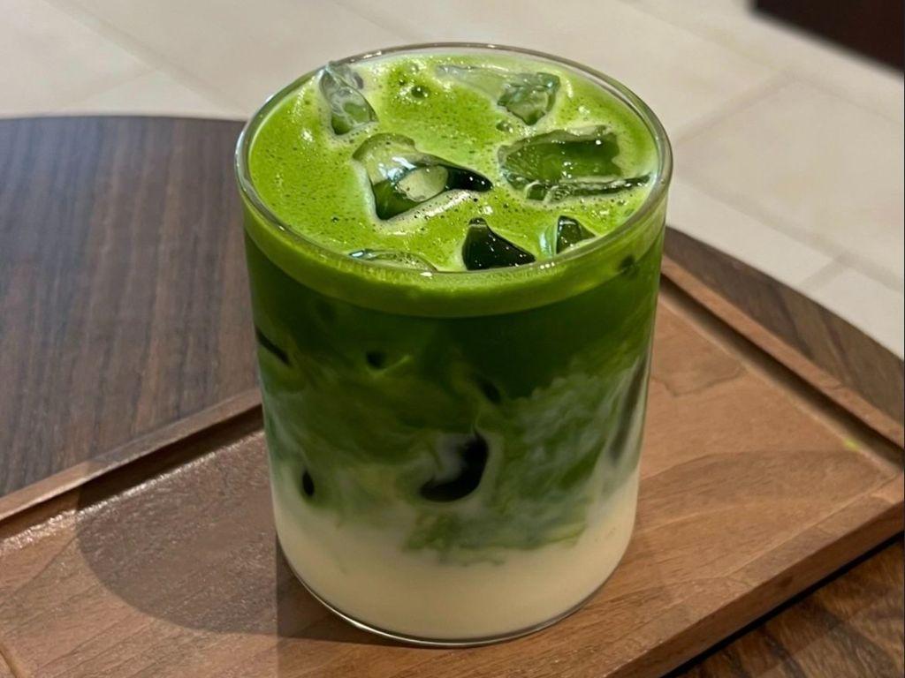
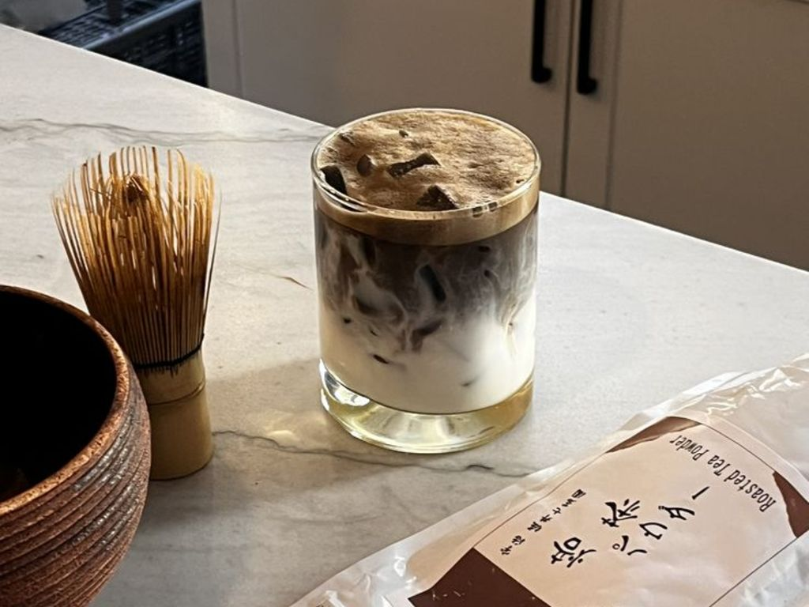
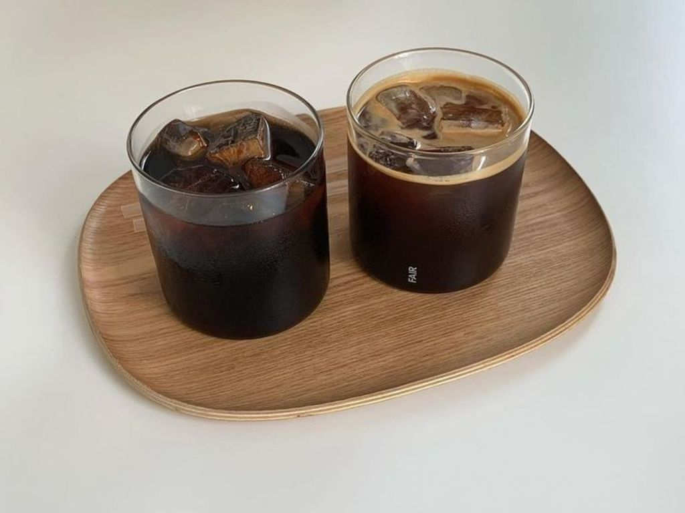
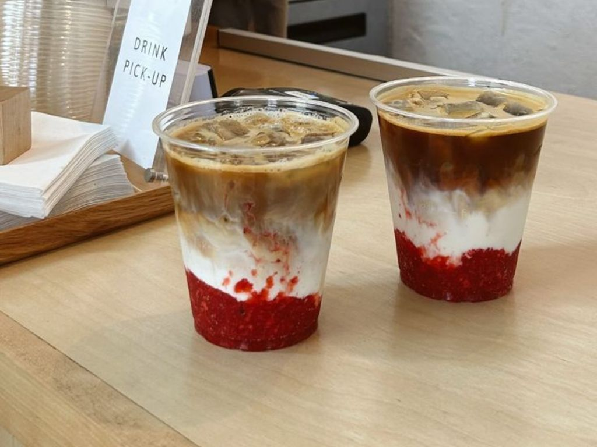
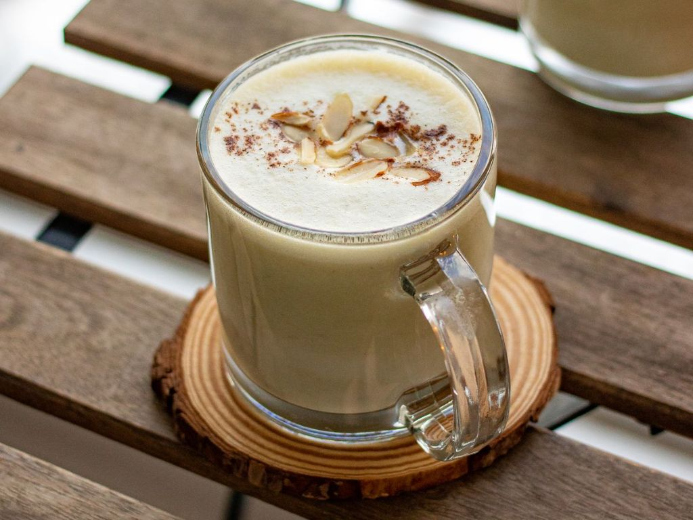

Los kissaten son cafeterías tradicionales japonesas conocidas
por su ambiente tranquilo. En estos lugares el café se prepara
cuidadosamente y suele acompañarse con comidas sencillas y postres.
Cafeterías modernas
Las cafeterías modernas de Japón combinan el café con bebidas
como matcha y hojicha. También son populares las bebidas de
temporada inspiradas en ingredientes y sabores japoneses.
抹茶ラテ

Matcha Latte
Sabor: herbal y cremoso
Bebida cremosa preparada con matcha, leche y, en algunos casos, un poco de azúcar. Tiene un sabor vegetal, ligeramente amargo y suave.
ほうじ茶ラテ

Hojicha Latte
Sabor: tostado y suave
Se prepara con hojicha, un té verde japonés tostado, mezclado con leche. Su sabor es más tostado, suave y menos vegetal que el del matcha.
日本のアイスコーヒー

Japanese Iced Coffee
Sabor: intenso y refrescante
Método de café en el que el café caliente se prepara directamente sobre hielo. Esto permite enfriarlo rápidamente y conservar un sabor limpio y aromático.
さくらラテ
Sakura Latte
Sabor: Floral, dulce y suave
Temporada: Primavera
Bebida de temporada inspirada en la flor de cerezo. Suele combinar leche con sabores florales y dulces, y muchas cafeterías la presentan en tonos rosados durante la primavera.
いちごラテ

Strawberry Latte
Sabor: Dulce, cremoso y afrutado
Temporada: Primavera
Bebida preparada con leche y fresa, generalmente con un sabor dulce y ligeramente ácido. Durante la temporada de fresas aparecen muchas bebidas rosas y postres de este sabor.
さつまいもラテ

Sweet Potato Latte
Sabor: Dulce, cremoso y tostado
Temporada: Otoño
Bebida inspirada en el camote japonés, uno de los sabores típicos del otoño. Se combina con leche para crear una bebida cremosa, dulce y con un sabor parecido al camote horneado.
.jpg)